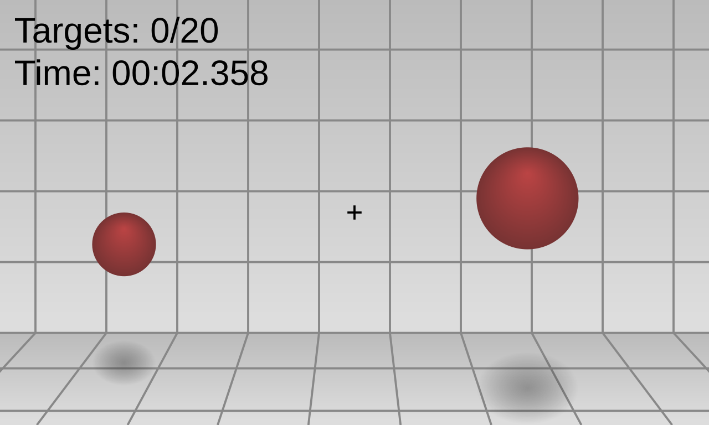

Aiming in videogames
Aiming is just as important as weapon choice in any FPS game—arguably even more so. You can pick the perfect weapon for a situation, but if you can’t consistently land shots, that advantage disappears instantly. Good aim is what turns a strong loadout into actual results.
At the most basic level, aiming determines how quickly and reliably you can eliminate opponents. In fast-paced shooters like Call of Duty, being able to snap onto a target and hit your shots first often decides the fight in a fraction of a second. In more methodical games like Battlefield, steady tracking and recoil control matter more, especially during longer engagements. Different games emphasize different aiming skills, but all of them require consistency.
Aiming also directly connects to positioning and awareness. Players with strong aim can hold angles more confidently, take riskier fights, and recover from mistakes more easily. Meanwhile, weaker aim forces you to rely more on luck or positioning alone, which isn’t reliable against better players. That’s why improving aim often feels like unlocking a higher level of play—you start winning fights you used to lose.
There are different aspects of aiming that matter. Crosshair placement—keeping your aim at head level where enemies are likely to appear—reduces how much you need to adjust when a fight starts. Flicking helps with reacting quickly to sudden targets, while tracking is important for following moving enemies. Recoil control ensures your shots stay accurate during sustained fire. Strong players develop all of these, not just one.
Another important point is consistency under pressure. It’s one thing to hit shots in a calm moment, but real matches involve stress, movement, and unpredictability. Good aim means performing reliably even when things get chaotic.
How do I improve aim?
If you want to improve, you can’t just play mindlessly and hope it happens. Practicing in aim trainers, focusing on mechanics, and being intentional about your crosshair placement in real matches will make a noticeable difference.In the end, aim is the foundation of FPS skill. Strategy, positioning, and weapon choice all matter—but without solid aim, you won’t be able to fully use any of them.
